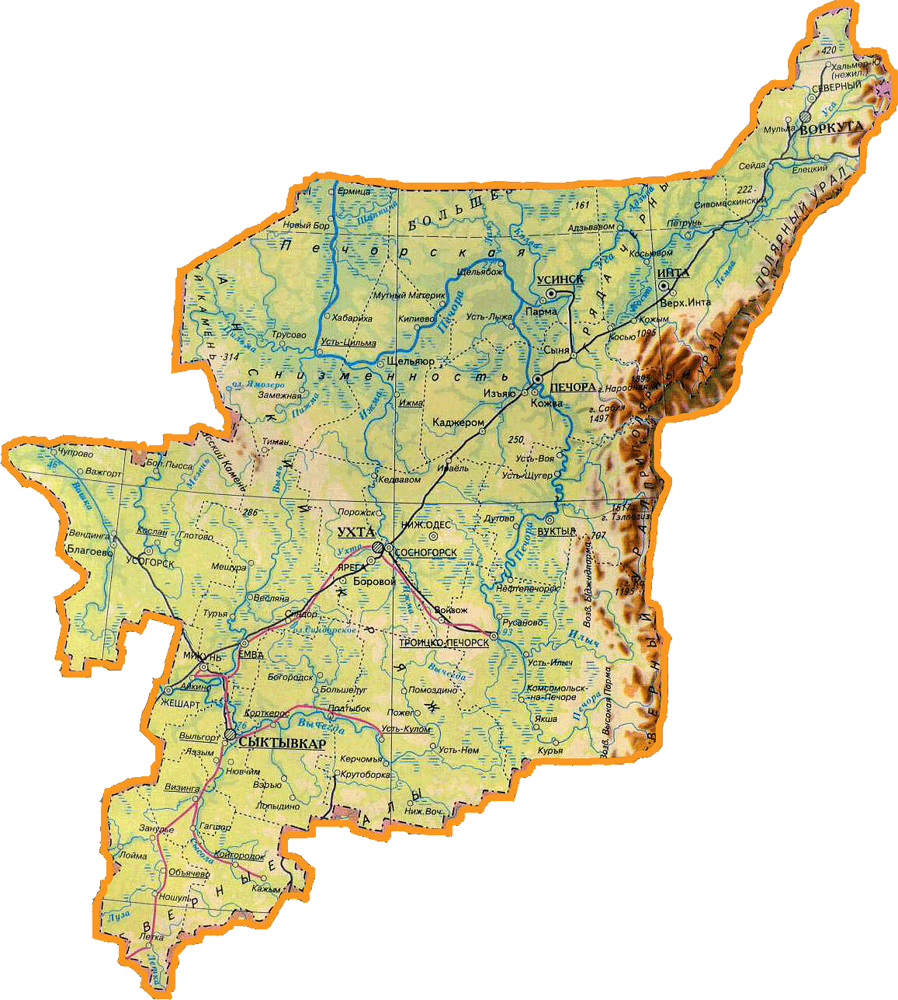

География Республики Коми

Географическое положение Республики Коми
Рельеф и полезные ископаемые
Растительный и животный мир. Почвы
Внутренние воды Республики Коми. Климат
Население и основные народы Республики Коми
Особенности хозяйственной деятельности
Экологические проблемы Республики Коми
Урок обобщения и контроля знаний